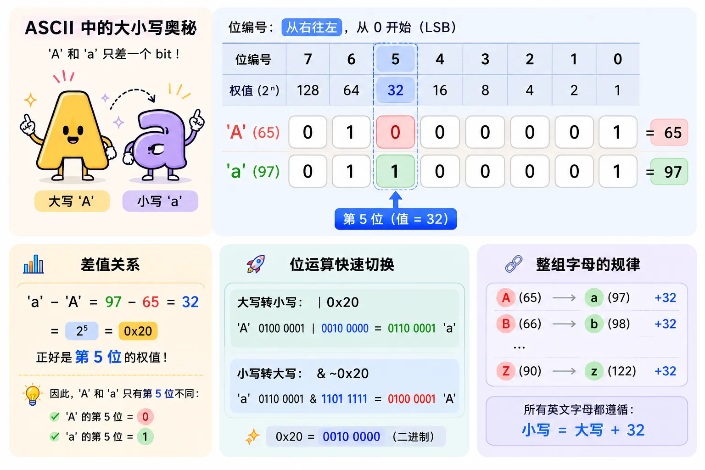

¿Cómo se representan los caracteres? -- ASCII y Unicode
En esta lección entenderás: cómo se representan los textos en una computadora que solo puede almacenar números, y por qué a veces al abrir un archivo aparecen caracteres ilegibles.
Analogía cotidiana: numeración de habitaciones
Imagina un edificio con 128 habitaciones.
La recepción no gestiona las habitaciones con nombres como «suite presidencial» u «habitación jardín».
Le asignan a cada habitación un número: 101, 102, 103...
Si buscas el número 101, sabes: "Ah, esa es la habitación estándar con cama doble".
La computadora procesa texto usando exactamente la misma idea:
Asignar a cada carácter un número de identificacióny después almacenar y procesar ese número.
Este «esquema de numeración» es la codificación de caracteres.
ASCII: el punto de partida de todas las codificaciones
ASCII (American Standard Code for Information Interchange, Código Estándar Estadounidense para el Intercambio de Información) nació en 1963.
Utiliza 7 bits para representar un carácter, pudiendo representar en total 2^7 = 128 caracteres.
Incluye:
- Caracteres de control (0~31): caracteres invisibles como retorno de carro, salto de línea, retroceso, etc.
- Caracteres imprimibles (32~126): espacio, puntuación, dígitos 0-9, letras mayúsculas A-Z, letras minúsculas a-z
- DEL, carácter de borrado (127)
Tabla completa de ASCII (0~127)

Algunos puntos clave de referencia en ASCII
| Categoría de carácter | Rango ASCII | Característica |
|---|---|---|
| '0' ~ '9' | 48 ~ 57 (0x30 ~ 0x39) | El código del dígito 0 es 48, no 0 |
| 'A' ~ 'Z' | 65 ~ 90 (0x41 ~ 0x5A) | Las letras mayúsculas están ordenadas de forma contigua |
| 'a' ~ 'z' | 97 ~ 122 (0x61 ~ 0x7A) | Las letras minúsculas están ordenadas de forma contigua |
| Salto de línea '\n' | 10 (0x0A) | LF, salto de línea en Unix/Mac |
| Retorno de carro '\r' | 13 (0x0D) | CR, salto de línea en Mac antiguos |
La ingeniosa relación entre mayúsculas y minúsculas
Observa la representación binaria de la 'A' mayúscula (65) y la 'a' minúscula (97):
'a' = 01100001
Solo difieren en el bit 5 (valor = 32, numeración de bits de derecha a izquierda, comenzando desde 0)
No es una coincidencia.
A nivel binario, cambiar el bit 5 de 0 a 1 convierte directamente la mayúscula en minúscula.
Este diseño ingenioso permitió que las primeras máquinas de teletipo pudieran alternar entre mayúsculas y minúsculas con un simple circuito.
El bit 5 se cuenta según los bits numerados de derecha a izquierda comenzando desde 0 (es decir, el LSB es el bit 0), que es la forma más común de numerar bits en computación:

Las letras mayúsculas y minúsculas difieren en 32, por lo que a nivel de ASCII,
'a' - 'A' = 32，'A' | 0x20 = 'a'(alternar mayúsculas/minúsculas con operaciones de bits). Todo esto proviene de la ingeniosa disposición de la tabla de codificación ASCII.
Limitación de ASCII: un byte no es suficiente
ASCII solo tiene 128 caracteres, lo cual es suficiente para el inglés.
Pero cuando la computadora llegó a Europa, surgió el problema:
El francés tiene «é», el alemán tiene «ü», el español tiene «ñ» — estas letras con signos diacríticos no existen en ASCII.
Entonces cada país comenzó a «aplicar parches» — usando la región 128~255 que ASCII no utilizaba (con el bit 8 establecido en 1):
- Europa occidental: ISO-8859-1 (Latin-1), añadió caracteres de Europa occidental como é, ü, etc.
- Europa oriental: ISO-8859-2, añadió letras eslavas.
- Grecia: ISO-8859-7, añadió el alfabeto griego.
- China: GB2312/GBK, usa dos bytes para representar un carácter chino.
- Japón: Shift-JIS
- Corea: EUC-KR
Esto se convirtió en un desastre:Un mismo dato binario, interpretado con distintas codificaciones, produce textos completamente diferentes.。
¿Abres un documento japonés y ves caracteres ilegibles? Ese es el síntoma clásico de una codificación no coincidente.
Unicode: un número único para cada carácter del mundo
El objetivo de Unicode es simple y ambicioso a la vez:
Asignar a cada carácter del mundo un número único (punto de código, Code Point).。
Unicode no es de 16 bits — su rango de puntos de código va de U+0000 a U+10FFFF, capaz de albergar más de un millón de caracteres.
Hasta ahora se han asignado alrededor de 150 000 caracteres, cubriendo casi todos los sistemas de escritura humanos, así como los emojis.
Ejemplos de puntos de código Unicode
| Carácter | Punto de código Unicode | Significado | Bloque al que pertenece |
|---|---|---|---|
| A | U+0041 | Letra latina mayúscula A | Latín básico (compatible con ASCII) |
| 你 | U+4F60 | Carácter chino CJK «你» | Ideogramas unificados CJK |
| 好 | U+597D | Carácter chino CJK «好» | Ideogramas unificados CJK |
| hello | U+68D2 | «Hola» en árabe | Escritura árabe |
| runoob | U+E0001 | Etiqueta de idioma | Bloque Tags |
Nota: Unicode es solo un «esquema de numeración» — te dice «el número del carácter X es U+XXXX».
No especifica «cómo se almacena el número U+XXXX en un archivo».
Almacenar en archivos es tarea de los «esquemas de codificación» como UTF-8, UTF-16.
Mucha gente confunde Unicode con UTF-8. Recuerda esta distinción: Unicode es el diccionario (define qué carácter corresponde a cada número), UTF-8 es la regla de escritura (define cómo se escriben los números como secuencias de bytes).
UTF-8: el esquema de codificación Unicode más popular
El diseño de UTF-8 es extremadamente ingenioso. Es unacodificación de longitud variable.：
- Caracteres ASCII (U+0000 ~ U+007F): se almacenan con 1 byte
- La mayoría de los caracteres europeos y árabes: se usan 2 bytes
- Chino, japonés y coreano: se usan 3 bytes
- Caracteres suplementarios (incluyendo la mayoría de los emojis): se usan 4 bytes
Reglas de codificación UTF-8
Del primer byte, elpatrón de bits inicialesle dice al decodificador: con cuántos bytes se almacena este carácter.
- Comenzando con 0: carácter de un solo byte
- Comenzando con 110: carácter de dos bytes
- Comenzando con 1110: carácter de tres bytes
- Comenzando con 11110: carácter de cuatro bytes
- Los bytes subsiguientes comienzan todos con 10
La mayor ventaja de UTF-8:Totalmente compatible con ASCII。
Cualquier texto ASCII válido es también un texto UTF-8 válido.
Esta característica permite que UTF-8 reemplace suavemente a los antiguos sistemas ASCII sin dañar ningún dato existente.
Demostración interactiva: consulta de codificación en tiempo real
Ingresa cualquier texto a continuación para ver el punto de código Unicode, los bytes de codificación UTF-8 y el espacio ocupado de cada carácter.
Sugerencias de uso:
- Ingresa texto solo en inglés y observa que cada carácter ocupa solo 1 byte.
- Ingresa chino y observa que cada carácter chino ocupa 3 bytes.
- Entrada
Hello RUNOOBObserva si los códigos ASCII de cada letra están en orden consecutivo. - Compara el binario de las letras mayúsculas y minúsculas, y encuentra los pares de letras correspondientes que difieren en solo 1 bit (como A y a).
Problema de caracteres ilegibles: causa y prevención
La esencia del texto ilegible se resume en una frase:Usar el diccionario equivocado para interpretar los datos.。
Supongamos que en un archivo se almacenan tres bytes codificados en UTF-8:E4 BD A0
- Decodificación con UTF-8: estos 3 bytes forman un carácter → «你»
- Decodificación con GBK: E4 BD se interpreta como un carácter GBK de doble byte → podría ser algún carácter chino sin relación.
- Decodificación con Latin-1: E4, BD, A0 se interpretan como tres caracteres de Europa occidental independientes → texto ilegible como «a + 1/2 + nbsp».
La misma secuencia binaria: tres diccionarios producen tres textos distintos.
¿Cómo evitar los caracteres ilegibles?
- Usar UTF-8 de manera uniforme.: la Web moderna, las API y las bases de datos casi todas tienen UTF-8 por defecto.
- Declarar la codificación explícitamente.: en HTML, escribe
<meta charset="UTF-8">, en el encabezado de respuesta HTTP escribeContent-Type: text/html; charset=utf-8 - Configuración del editor.: editores como VS Code, Sublime, etc., admiten establecer la codificación de archivos en UTF-8.
Problema de BOM (marca de orden de bytes)
Aunque UTF-8 no necesita considerar el orden de bytes (porque opera en bytes), algunos programas de Windows agregan un BOM al comienzo del archivo UTF-8:EF BB BF。
Estos tres bytes se usan para marcar «este archivo está codificado en UTF-8».
Pero en sistemas Unix/Linux, el BOM puede causar diversos problemas:
- En la primera línea del script de shell,
#!/bin/bashhay tres bytes invisibles de más al principio, lo que impide que el script se ejecute. - Si un archivo PHP tiene BOM, puede disparar el error «headers already sent».
- Los analizadores JSON pueden rechazar datos JSON que comiencen con BOM.
Recomendación: use el formato «sin BOM» (UTF-8 without BOM) para archivos UTF-8; esta es también la configuración predeterminada de la mayoría de los editores modernos.
Demostración de código: codificación y decodificación
Ejemplos
import sys
# =============================================
# Demostración 1: uso básico de ord() y chr()
# =============================================
print("=" * 60)
print("Demostración 1: conversión mutua entre caracteres y puntos de código")
print("=" * 60)
# ord() obtiene el punto de código Unicode del carácter
text = "Hello RUNOOB"
for ch in text:
cp = ord(ch)
print(f" '{ch}' → punto de código U+{cp:04X} (decimal {cp})")
print()
# chr() obtiene el carácter a partir del punto de código
for cp in [65, 97, 48, 0x4F60, 0x597D]:
ch = chr(cp)
print(f" Punto de código U+{cp:04X} → carácter '{ch}'")
# =============================================
# Demostración 2: codificación en secuencia de bytes (encode)
# =============================================
print("\n" + "=" * 60)
print("Demostración 2: cadena → secuencia de bytes UTF-8")
print("=" * 60)
texts = ["A", "Hello", "你好", "RUNOOB 教程"]
for text in texts:
utf8_bytes = text.encode('utf-8')
hex_str = utf8_bytes.hex(' ').upper()
print(f"\n"Texto: '{text}'")
print(f" Número de caracteres: {len(text)}")
print(f" Número de bytes UTF-8: {len(utf8_bytes)}")
print(f" UTF-8 hexadecimal: {hex_str}")
# Análisis byte a byte
print(f" Desglose de bytes:")
for i, b in enumerate(utf8_bytes):
bin_str = format(b, '08b')
# Determinar el tipo de byte
if b < 0x80:
typ = "ASCII de un byte"
elif b >= 0xC0 and b < 0xE0:
typ = "Primer byte de doble byte"
elif b >= 0xE0 and b < 0xF0:
typ = "Primer byte de triple byte"
elif b >= 0x80 and b < 0xC0:
typ = "Byte de continuación"
else:
typ = "Otro"
print(f" Byte {i}: 0x{b:02X} = {bin_str} ({typ})")
# =============================================
# Demostración 3: codificación GBK (codificación no Unicode comúnmente utilizada en China)
# =============================================
print("\n" + "=" * 60)
print("Demostración 3: codificación GBK (comparación con UTF-8)")
print("=" * 60)
text = "你好 RUNOOB"
utf8_bytes = text.encode('utf-8')
gbk_bytes = text.encode('gbk')
print(f"Texto: '{text}'")
print(f" UTF-8 ({len(utf8_bytes)} bytes): {utf8_bytes.hex(' ').upper()}")
print(f" GBK ({len(gbk_bytes)} bytes): {gbk_bytes.hex(' ').upper()}")
# En GBK, cada carácter chino ocupa 2 bytes
print(f"\nNota: en GBK, los caracteres chinos ocupan 2 bytes; en UTF-8, 3 bytes.)
print(f" Para texto chino, GBK es más compacto que UTF-8")
print(f" Pero GBK no admite todos los caracteres Unicode (como emoji)")
# =============================================
# Demostración 4: escenarios de error de decodificación
# =============================================
print("\n" + "=" * 60)
print("Demostración 4: escenarios de error de decodificación (causa del texto ilegible)")
print("=" * 60)
# Codificar chino con UTF-8
original = "你好"
utf8_data = original.encode('utf-8')
print(f"Texto original: '{original}'")
print(f"Codificación UTF-8: {utf8_data.hex(' ').upper()}")
# Error 1: decodificar datos UTF-8 con GBK
try:
decoded_wrong = utf8_data.decode('gbk')
print(f"Decodificado con GBK: '{decoded_wrong}' (¡texto ilegible!)")
except Exception as e:
print(f"Error al decodificar con GBK: {e}")
# Error 2: decodificar con Latin-1
decoded_latin = utf8_data.decode('latin-1')
print(f"Decodificado con Latin-1: '{decoded_latin}' (texto ilegible que parece caracteres de Europa occidental)")
# =============================================
# Demostración 5: crear un decodificador razonable
# =============================================
print("\n" + "=" * 60)
print("Demostración 5: detección de codificación y decodificación segura")
print("=" * 60)
def safe_decode(data, encodings=['utf-8', 'gbk', 'latin-1']):
"""Intenta decodificar con varias codificaciones y devuelve el primer resultado exitoso."""
for enc in encodings:
try:
return data.decode(enc), enc
except (UnicodeDecodeError, LookupError):
continue
return data.decode('latin-1', errors='replace'), 'latin-1 (fallback)'
# Prueba
test_cases = [
"Hello RUNOOB".encode('utf-8'),
"你好世界".encode('utf-8'),
"计算机".encode('gbk'),
]
for data in test_cases:
result, encoding = safe_decode(data)
print(f" Datos ({len(data)} bytes) decodificados con {encoding}: '{result}'")
print("\n" + "=" * 60)
print(Resumen: las cadenas son la representación interna de Python; la codificación es el formato para el almacenamiento/transmisión.)
print(Realiza siempre la conversión de codificación en el límite de E/S; internamente usa siempre el tipo str.)
print("=" * 60)
Estado actual y futuro de la codificación de caracteres
Hasta hoy,UTF-8 se ha convertido en el estándar de facto de Internet.。
Más del 98% de las páginas web utilizan codificación UTF-8.
La especificación JSON requiere UTF-8.
Casi todos los lenguajes de programación modernos usan UTF-8 para procesar texto por defecto.
Unicode sigue expandiéndose.
Las nuevas versiones de Unicode añaden caracteres cada año, incluyendo: escrituras raras, escrituras históricas y nuevos emoji.
La codificación ha pasado de la pregunta «¿se puede representar?» a «¿cómo almacenar y transmitir de manera eficiente?».
Otras extensionesSi hoy creas un nuevo proyecto, elegir UTF-8 no será un error. Es un esquema de codificación retrocompatible con ASCII, multiplataforma y compatible con todos los idiomas. Lo único que debes tener en cuenta es: asegúrate de que todo tu stack (frontend, backend, base de datos) use UTF-8, no lo mezcles.
Haz clic para compartir notas
<p style="font-size:14px;">¡Las notas deben ser una extensión del contenido de este artículo!</p><br> <p style="font-size:12px;"><a href="../tougao.html" target="_blank">Envío de artículos, haga clic aquí</a></p> <p style="font-size:14px;"><a href="../w3cnote/runoob-user-test-intro.html" target="_blank">Cómo obtener el código de invitación de registro</a></p> <h3 class="text-muted"><i class="fa fa-info-circle" aria-hidden="true"></i> Antes de compartir notas, debes <a href=";.html" class="runoob-pop">iniciar sesión</a>!</h3> <p><a href="../w3cnote/runoob-user-test-intro.html" target="_blank">Cómo obtener el código de invitación de registro</a></p>